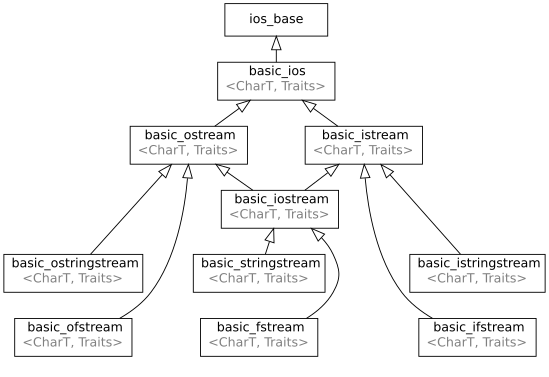

输入/输出库
来自cppreference.com
< cpp
C++ 包含如下的输入/输出库：OOP-风格的，基于流的输入/输出库，基于打印的函数族(C++23 起)，以及C 风格输入/输出函数的标准集合。
基于流的输入/输出
基于流的输入/输出库围绕抽象的输入/输出设备组织。这些抽象设备允许相同代码处理对文件、内存流或随即进行任意操作（例如压缩）的自定义适配器设备的输入/输出。
大多数这些类均被模板化，故它们能被适配到任何标准字符类型。已为最常用的基本字符类型（char 和 wchar_t）提供了分离的 typedef。这些类以下列层次组织：

继承图
抽象 | |
在标头
<ios> 定义 | |
| 管理格式化标志和输入/输出异常 (类) | |
| 管理任意流缓冲 (类模板) | |
在标头
<streambuf> 定义 | |
| 抽象原生设备 (类模板) | |
在标头
<ostream> 定义 | |
| 包装给定的抽象设备（std::basic_streambuf） 并提供高层输出接口 (类模板) | |
在标头
<istream> 定义 | |
| 包装给定的抽象设备（std::basic_streambuf） 并提供高层输入接口 (类模板) | |
| 包装给定的抽象设备（std::basic_streambuf） 并提供高层输入/输出接口 (类模板) | |
文件输入/输出实现 | |
在标头
<fstream> 定义 | |
| 实现原生文件设备 (类模板) | |
| 实现高层文件流输入操作 (类模板) | |
| 实现高层文件流输出操作 (类模板) | |
| 实现高层文件流输入/输出操作 (类模板) | |
字符串输入/输出实现 | |
在标头
<sstream> 定义 | |
| 实现原生字符串设备 (类模板) | |
| 实现高层字符串流输入操作 (类模板) | |
| 实现高层字符串流输出操作 (类模板) | |
| 实现高层字符串流输入/输出操作 (类模板) | |
数组输入/输出实现 | |
在标头
<spanstream> 定义 | |
(C++23) |
实现原始固定字符缓冲区设备 (类模板) |
(C++23) |
实现固定字符缓冲区输入操作 (类模板) |
(C++23) |
实现固定字符缓冲区输出操作 (类模板) |
(C++23) |
实现固定字符缓冲区输入/输出操作 (类模板) |
在标头
<strstream> 定义 | |
(C++98 弃用)(C++26 移除) |
实现原生字符数组设备 (类) |
(C++98 弃用)(C++26 移除) |
实现字符数组输入操作 (类) |
(C++98 弃用)(C++26 移除) |
实现字符数组输出操作 (类) |
(C++98 弃用)(C++26 移除) |
实现字符数组输入/输出操作 (类) |
同步的输出 (C++20 起) | |
在标头
<syncstream> 定义 | |
(C++20) |
同步输出设备的包装器 (类模板) |
(C++20) |
同步输出流的包装器 (类模板) |
typedef
在 std 命名空间为常用字符类型提供了下列 typedef：
| 类型 | 定义 |
在标头
<ios> 定义 | |
| std::ios | std::basic_ios<char>
|
| std::wios | std::basic_ios<wchar_t>
|
在标头
<streambuf> 定义 | |
| std::streambuf | std::basic_streambuf<char>
|
| std::wstreambuf | std::basic_streambuf<wchar_t>
|
在标头
<istream> 定义 | |
| std::istream | std::basic_istream<char>
|
| std::wistream | std::basic_istream<wchar_t>
|
| std::iostream | std::basic_iostream<char>
|
| std::wiostream | std::basic_iostream<wchar_t>
|
在标头
<ostream> 定义 | |
| std::ostream | std::basic_ostream<char>
|
| std::wostream | std::basic_ostream<wchar_t>
|
在标头
<fstream> 定义 | |
| std::filebuf | std::basic_filebuf<char>
|
| std::wfilebuf | std::basic_filebuf<wchar_t>
|
| std::ifstream | std::basic_ifstream<char>
|
| std::wifstream | std::basic_ifstream<wchar_t>
|
| std::ofstream | std::basic_ofstream<char>
|
| std::wofstream | std::basic_ofstream<wchar_t>
|
| std::fstream | std::basic_fstream<char>
|
| std::wfstream | std::basic_fstream<wchar_t>
|
在标头
<sstream> 定义 | |
| std::stringbuf | std::basic_stringbuf<char>
|
| std::wstringbuf | std::basic_stringbuf<wchar_t>
|
| std::istringstream | std::basic_istringstream<char>
|
| std::wistringstream | std::basic_istringstream<wchar_t>
|
| std::ostringstream | std::basic_ostringstream<char>
|
| std::wostringstream | std::basic_ostringstream<wchar_t>
|
| std::stringstream | std::basic_stringstream<char>
|
| std::wstringstream | std::basic_stringstream<wchar_t>
|
在标头
<spanstream> 定义 | |
| std::spanbuf (C++23) | std::basic_spanbuf<char>
|
| std::wspanbuf (C++23) | std::basic_spanbuf<wchar_t>
|
| std::ispanstream (C++23) | std::basic_ispanstream<char>
|
| std::wispanstream (C++23) | std::basic_ispanstream<wchar_t>
|
| std::ospanstream (C++23) | std::basic_ospanstream<char>
|
| std::wospanstream (C++23) | std::basic_ospanstream<wchar_t>
|
| std::spanstream (C++23) | std::basic_spanstream<char>
|
| std::wspanstream (C++23) | std::basic_spanstream<wchar_t>
|
在标头
<syncstream> 定义 | |
| std::syncbuf (C++20) | std::basic_syncbuf<char>
|
| std::wsyncbuf (C++20) | std::basic_syncbuf<wchar_t>
|
| std::osyncstream (C++20) | std::basic_osyncstream<char>
|
| std::wosyncstream (C++20) | std::basic_osyncstream<wchar_t>
|
预定义标准流对象
在标头
<iostream> 定义 | |
| 从标准 C 输入流 stdin 读取 (全局对象) | |
| 写入到标准 C 输出流 stdout (全局对象) | |
| 写入到标准 C 错误流 stderr，无缓冲 (全局对象) | |
| 写入到标准 C 错误流 stderr (全局对象) | |
输入/输出操纵符
基于流的输入/输出库用输入/输出操纵符（例如 std::boolalpha、std::hex 等）控制流的行为。
类型
定义下列辅助类型：
在标头
<ios> 定义 | |
| 表示相对的文件/流位置（距 fpos 的偏移），足以表示任何文件大小 (typedef) | |
| 表示一次输入/输出操作中转移的字符数或输入/输出缓冲区的大小 (typedef) | |
| 表示流或文件中的绝对位置 (类模板) | |
提供下列 std::fpos<std::mbstate_t> 的 typedef 名：
在标头
<iosfwd> 定义 | |
| 类型 | 定义 |
std::streampos
|
std::fpos<std::char_traits<char>::state_type>
|
std::wstreampos
|
std::fpos<std::char_traits<wchar_t>::state_type>
|
std::u8streampos (C++20)
|
std::fpos<std::char_traits<char8_t>::state_type>
|
std::u16streampos (C++11)
|
std::fpos<std::char_traits<char16_t>::state_type>
|
std::u32streampos (C++11)
|
std::fpos<std::char_traits<char32_t>::state_type>
|
错误类别接口 (C++11 起)
在标头
<ios> 定义 | |
(C++11) |
输入/输出流的错误码 (枚举) |
(C++11) |
鉴别 iostream 错误类别 (函数) |
打印函数 (C++23 起)
对 Unicode 编码的格式化文本提供输入输出支持的 print 族函数。这些函数拥有 std::format 带来的性能优势，默认情况下与本地环境无关；减少使用全局状态，同时避免 operator<< 调用和申请临时的 std::string 对象，一般情况下比 iostreams 和 stdio 更高效。
标准库提供了如下 print 族函数：
在标头
<print> 定义 | |
(C++23) |
将参数的格式化表达输出到 stdout 或文件缓冲区 (函数模板) |
(C++23) |
将参数的格式化表达输出到 stdout 或文件缓冲区，输出完成后换行 (函数模板) |
| 使用类型擦除的参数表示，打印到支持 Unicode 的 stdout 或文件流 (函数) | |
| 使用类型擦除的参数表示，打印到 stdout 或文件流 (函数) | |
在标头
<ostream> 定义 | |
(C++23) |
输出各实参的格式化表示 (函数模板) |
(C++23) |
输出各实参的格式化表示并追加 '\n' (函数模板) |
C 风格输入/输出
C++ 也包含了 C 所定义的输入/输出函数，如 std::fopen、std::getc 等。
参阅
| 文件系统库 (C++17 起) |